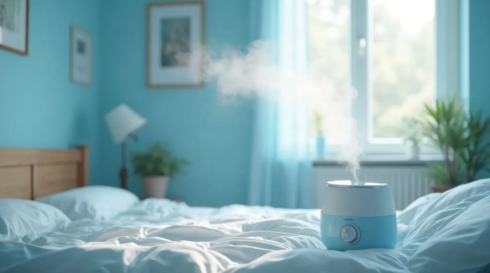

식사 중에만 맑은 콧물이 흐르고 식사가 끝나면 금세 멎는다면 음식의 열기와 매운 성분에 코가 예민하게 반응하는 경우가 많아, 먹는 순서와 온도, 평소 코 상태와 몸의 찬 기운까지 함께 살핍니다.
여쭙는 것
- 콧물은 식사를 시작한 뒤 몇 분 만에 나오나요, 그리고 식사를 마치고 얼마 만에 멎…
- 뜨거운 음식, 매운 음식, 둘 중 어느 쪽에서 더 심한가요? 차가운 냉면이나 미지근…
- 콧물은 물처럼 맑은가요, 아니면 끈적하거나 노랗고 초록빛이 도나요?
생활에서 해 볼 것
- 식사 10분 전쯤 미지근한 물을 반 컵 천천히 마셔 입과 목을 먼저 적셔 두세요.…
- 국물은 그릇째 얼굴 가까이 들고 마시기보다 숟가락으로 떠서 한 번 식힌 뒤 드세요.…
- 뜨거운 찌개나 탕은 뚝배기에서 앞접시로 덜어 2~3분 식힌 다음 먹어 보세요. 입에…
한의원에서 함께 살필 것
- 식사 때마다 콧물이 많아 외식이나 회식 자리가 불편한 경우
- 식사 때 콧물과 함께 아침 재채기, 찬 공기 콧물까지 겹쳐 코가 하루 종일 예민한 경우
- 손발이 차고 소화가 더디며 쉽게 피로한 흐름이 함께 있는 경우
먼저 확인이 필요한 신호
- 특정 음식을 먹은 뒤 입안이 가렵고 입술이나 혀가 붓는 경우
- 콧물과 함께 온몸에 두드러기가 올라오거나 목이 조이는 느낌이 드는 경우
- 한쪽 코에서만 맑은 물이 계속 흐르고 머리를 숙이면 더 많아지는 경우, 특히 머리를…
뜨거운 찌개나 칼국수, 매운 떡볶이를 먹기 시작하면 코에서 맑은 물이 줄줄 흘러 휴지를 옆에 두고 먹어야 하는 분이 적지 않습니다. 식사할 때만 콧물이 나오고 숟가락을 내려놓은 뒤 10~20분 안에 멎는다면, 감기나 알레르기보다는 음식의 열기와 매운 성분, 김에 코 점막이 예민하게 반응하는 경우가 많습니다. 흔히 미각성 비염이나 음식으로 생기는 비알레르기성 비염이라고 부르며, 그 자체가 위험한 일은 드뭅니다. 다만 식사와 상관없이 하루 종일 콧물이 이어지거나, 한쪽 코에서만 물이 흐르고 머리를 숙일 때 더 많아지거나, 특정 음식을 먹은 뒤 입술이 붓고 두드러기가 올라온다면 이야기가 달라지므로 병원 진료를 먼저 받으셔야 합니다.
왜 식사 때만 콧물이 날까요
- 코 점막에는 따뜻하고 습한 공기를 만들기 위한 작은 샘이 많은데, 뜨거운 국물의 김이 코로 들어오면 점막이 이를 자극으로 받아들여 물을 많이 내보낼 수 있습니다.
- 고추의 매운 성분은 혀뿐 아니라 코 안의 신경도 건드려, 맵다는 신호와 함께 콧물 분비가 늘어나는 반응을 부르기 쉽습니다. 겨자, 와사비, 생마늘, 생양파처럼 코를 찡하게 하는 음식도 비슷합니다.
- 나이가 들수록 코 점막의 신경 조절이 예민해져 젊을 때는 없던 식사 중 콧물이 생겼다는 분이 많습니다.
- 추운 바깥에서 막 들어와 몸이 식은 상태에서 뜨거운 음식을 먹으면 온도 차가 커서 반응이 더 크게 나타나기도 합니다.
- 평소 아침 재채기, 찬 공기에 콧물이 나는 경향이 있던 분은 코 점막이 이미 예민한 상태라 식사 때도 쉽게 반응합니다.
- 술, 특히 따뜻하게 데운 술이나 독한 술은 혈관을 넓혀 코가 더 막히고 콧물이 늘어나는 쪽으로 작용할 수 있습니다.
- 한의학에서는 콧물을 몸의 진액이 위로 넘쳐 흐르는 모습으로 보고, 몸의 바깥을 지키는 기운이 약해 찬 기운과 열기에 쉽게 흔들리는지, 속이 차서 물기를 붙잡지 못하는지를 함께 살핍니다.

먼저 이렇게 여쭙니다
- 콧물은 식사를 시작한 뒤 몇 분 만에 나오나요, 그리고 식사를 마치고 얼마 만에 멎나요?
- 뜨거운 음식, 매운 음식, 둘 중 어느 쪽에서 더 심한가요? 차가운 냉면이나 미지근한 음식을 먹을 때는 어떤가요?
- 콧물은 물처럼 맑은가요, 아니면 끈적하거나 노랗고 초록빛이 도나요?
- 양쪽 코에서 함께 나오나요, 한쪽에서만 나오나요?
- 식사 중에 재채기, 눈물, 코막힘이 함께 오나요?
- 식사 시간이 아닐 때도 콧물이나 코막힘, 목 뒤로 넘어가는 느낌이 있나요?
- 특정 음식을 먹은 뒤 입안이 가렵거나 입술이 붓고 피부가 올라온 적이 있나요?
- 혈압약, 전립선약, 진정제처럼 코 상태에 영향을 줄 수 있는 약을 최근 시작하거나 바꾸셨나요?
- 콧물을 억지로 참거나 자주 세게 풀어 귀가 먹먹해지는 일은 없나요?
- 지난번 상담에서 코와 소화 이야기를 나누었다면 그 뒤 달라진 점부터 이어서 여쭙니다.
일상에서 먼저 해 볼 수 있는 것
아래 순서는 낮 12시 30분에 점심을 먹는 경우를 기준으로 적었습니다. 저녁 식사에도 같은 간격으로 옮겨 쓰시면 됩니다.
- 식사 10분 전쯤 미지근한 물을 반 컵 천천히 마셔 입과 목을 먼저 적셔 두세요. 추운 바깥에서 들어왔다면 바로 먹기보다 5분 정도 실내 온도에 몸을 맞춘 뒤 숟가락을 드는 편이 낫습니다.
- 국물은 그릇째 얼굴 가까이 들고 마시기보다 숟가락으로 떠서 한 번 식힌 뒤 드세요. 김이 코로 바로 들어가는 양을 줄이는 것만으로도 콧물이 덜하다는 분이 많습니다.
- 뜨거운 찌개나 탕은 뚝배기에서 앞접시로 덜어 2~3분 식힌 다음 먹어 보세요. 입에 넣었을 때 뜨겁다기보다 따뜻하다고 느끼는 정도가 기준입니다.
- 매운 음식은 첫 숟가락부터 강한 맛으로 시작하지 말고 밥이나 나물처럼 순한 반찬을 먼저 몇 입 먹은 뒤 곁들여 보세요. 고춧가루, 청양고추, 겨자, 와사비의 양을 반으로 줄여 일주일 지켜보는 것도 방법입니다.
- 식사 중에 콧물이 흐르면 세게 풀지 말고 부드러운 휴지로 콧구멍 입구를 가볍게 눌러 닦으세요. 세게 풀면 코 밑 피부가 헐고 귀가 먹먹해질 수 있습니다.
- 식사 뒤에는 미지근한 물로 입을 헹구고, 코 밑이 쓰라리면 순한 보습제를 얇게 발라 두세요.
- 콧물이 잦은 분은 하루 한두 번, 아침 세면 때와 저녁 샤워 뒤에 생리식염수로 코 세척을 해 보세요. 물은 미지근하게, 한쪽 코에 넣을 때 고개를 살짝 숙이고 입으로 숨을 쉬면 귀로 물이 넘어가는 것을 줄일 수 있습니다.
- 외출할 때 목도리나 마스크로 코와 입 주변을 따뜻하게 감싸면 찬 공기와 뜨거운 음식 사이의 온도 차가 줄어 식사 때 반응이 덜하다는 분이 있습니다.
- 술자리에서는 데운 술과 독한 술을 피하고, 술을 마신다면 물을 같은 양만큼 번갈아 마셔 보세요.
- 2주 동안 음식 종류와 온도, 콧물 정도를 간단히 적어 보면 나에게 유난히 반응하는 음식이 무엇인지 드러나는 경우가 많습니다.

예를 들면 이런 경우입니다
아래는 실제 환자 이야기가 아니라 이해를 돕기 위해 만든 예시입니다.
- 예를 들어 겨울에 점심마다 회사 근처에서 뜨거운 국밥을 먹는 분이 숟가락을 든 지 3분이면 콧물이 흘러 휴지 반 통을 쓰는 경우라면, 국물을 앞접시에 덜어 식혀 먹고 그릇에 얼굴을 가까이 대지 않는 것부터 바꿔 봅니다. 식사 뒤 바로 멎고 다른 때는 괜찮다면 음식의 열기에 대한 반응으로 보고 생활 조정을 먼저 해 봅니다.
- 예를 들어 매운 음식을 좋아하는 분이 요즘 들어 떡볶이나 짬뽕을 먹을 때마다 콧물과 눈물이 함께 쏟아지고, 아침에 재채기도 잦아졌다면 코 점막 전체가 예민해진 시기일 수 있습니다. 이럴 때는 매운 정도를 낮추는 것과 함께 아침 코 상태, 잠자리 습도, 찬 공기 노출을 함께 살핍니다.
- 예를 들어 나이가 들면서 식사 때마다 콧물이 나기 시작했고 평소 손발이 차며 소화가 더딘 분이라면, 코만의 문제로 보기보다 몸이 쉽게 식고 속이 찬 흐름이 함께 있는지 진맥과 배 진찰로 살핍니다.
- 예를 들어 새우나 땅콩이 들어간 음식을 먹은 뒤에만 콧물과 함께 입안이 가렵고 입술이 부어오른다면 이는 열기에 대한 반응이 아니라 음식 알레르기일 수 있어, 그 음식을 피하고 병원에서 먼저 확인을 받으셔야 합니다.
스스로 점검해 보는 목록
- 콧물이 식사 시작 후 몇 분 안에 나오고, 식사 뒤 30분 안에 멎는다.
- 차가운 음식을 먹을 때는 거의 나오지 않는다.
- 콧물은 맑고 물처럼 흐르며 냄새나 색이 없다.
- 양쪽 코에서 비슷하게 나온다.
- 식사 때 외에는 코가 크게 불편하지 않다.
- 입안 가려움, 입술 부기, 두드러기, 숨참이 함께 온 적은 없다.
- 찬 공기, 아침 기상, 온도 차에서도 콧물이 잘 나는 편이다.
- 손발이 차고 식사 뒤 쉽게 더부룩한 편이다.
위의 앞쪽 여섯 가지에 해당한다면 식사 중 콧물일 가능성이 높고, 뒤쪽 두 가지까지 해당한다면 코와 몸 전체의 찬 기운을 함께 살펴볼 만합니다.

한의원에서 함께 살필 수 있는 경우
- 식사 때마다 콧물이 많아 외식이나 회식 자리가 불편한 경우
- 식사 때 콧물과 함께 아침 재채기, 찬 공기 콧물까지 겹쳐 코가 하루 종일 예민한 경우
- 손발이 차고 소화가 더디며 쉽게 피로한 흐름이 함께 있는 경우
- 이비인후과에서 큰 이상은 없다고 들었지만 콧물이 계속 신경 쓰이는 경우
- 콧물을 자주 풀어 코 밑이 헐거나 귀가 먹먹한 일이 잦은 경우
좋은꿈참사랑한의원에서는 첫 방문 때 콧물이 언제, 어떤 음식에서, 얼마나 나오는지와 식사 외 시간의 코 상태를 먼저 여쭙니다. 이어 평소 추위를 타는 정도, 소화와 대변, 잠과 피로, 복용 중인 약을 차례로 확인합니다. 그 뒤 모든 분께 진맥을 하며 맥이 가라앉아 있는지 들떠 있는지, 몸 전체의 리듬이 찬 쪽으로 기울어 있는지를 살피고, 필요하면 혀와 배의 상태도 함께 봅니다. 이야기와 진찰을 바탕으로 침이나 한약 상담 여부를 정하고, 귀가 전에는 이번 주에 바꿔 볼 식사 습관 한두 가지와 다음 방문 때 확인할 점을 정리해 드립니다. 다음 방문에서는 지난번 정한 내용이 어떻게 되었는지부터 이어서 여쭙니다. 이종호 대표원장을 비롯해 조영기 원장, 정원영 원장이 같은 방식으로 진료하며, 이비인후과 진찰이 먼저 필요해 보이면 그 내용을 먼저 안내합니다.
얼마나 지켜보고, 언제 상담하면 좋을까요
- 국물을 식혀 먹고 매운 정도를 낮춘 뒤 2주 정도 지켜보면 콧물의 양과 시간이 어떻게 달라지는지 대략 보입니다.
- 2~3주가 지나도 식사 때마다 휴지를 여러 장 써야 할 만큼 콧물이 많다면 상담을 권합니다.
- 식사와 상관없이 콧물과 코막힘이 4주 넘게 이어지면 코 전체 상태를 확인해 보시는 것이 좋습니다.
- 한쪽 코에서만 맑은 물이 계속 흐르거나, 콧물에 피가 섞이거나, 얼굴 한쪽이 붓고 아프다면 기다리지 말고 이비인후과 진료를 먼저 받으세요.
이렇게 기록해 오시면 상담이 쉬워집니다
- 2주 동안 먹은 음식 이름, 뜨거웠는지, 매웠는지
- 콧물이 시작된 시각과 멎은 시각, 쓴 휴지의 대략적인 양
- 재채기, 눈물, 코막힘이 함께 왔는지
- 식사 전에 바깥에서 막 들어왔는지, 술을 마셨는지
- 식사 외 시간의 코 상태(아침 재채기, 밤 코막힘 등)
- 복용 중인 약과 영양제 이름, 최근 바꾼 날짜
- 음식을 먹은 뒤 입안 가려움이나 부기가 있었다면 그 음식과 시각
이런 증상은 먼저 확인이 필요합니다
- 특정 음식을 먹은 뒤 입안이 가렵고 입술이나 혀가 붓는 경우
- 콧물과 함께 온몸에 두드러기가 올라오거나 목이 조이는 느낌이 드는 경우
- 한쪽 코에서만 맑은 물이 계속 흐르고 머리를 숙이면 더 많아지는 경우, 특히 머리를 다친 적이 있는 경우
- 콧물에 피가 자주 섞이거나 한쪽 코가 계속 막히는 경우
- 고열, 얼굴 통증, 누렇고 냄새나는 콧물이 일주일 넘게 이어지는 경우
복용 중인 약은 처방한 의사와 상의 없이 줄이거나 끊지 않습니다. 음식을 먹은 뒤 숨이 차거나 쌕쌕거리고, 입술이나 얼굴이 붓고, 어지럽거나 의식이 흐려진다면 기다리지 말고 119에 바로 연락하세요.

함께 읽으면 좋은 글
- 아침에 일어나자마자 재채기와 맑은 콧물이 쏟아질 때는 어떻게 살피나요?
- 코를 자주 풀어 코 밑이 헐고 따가울 때는 어떻게 하나요?
- 매운 음식을 먹고 나서 속이 쓰릴 때는 어떻게 살피나요?
한눈에 보는 표
| 구분 | 핵심 |
|---|---|
| 여쭙는 것 | 콧물은 식사를 시작한 뒤 몇 분 만에 나오나요, 그리고 식사를 마치고 얼마 만에 멎나요? 뜨거운 음식, 매운 음식, 둘 중 어느 쪽에서 더 심한가요? 차가운 냉면이나 미지근한 음식을 먹을 때는 어떤가요? |
| 생활에서 해 볼 것 | 식사 10분 전쯤 미지근한 물을 반 컵 천천히 마셔 입과 목을 먼저 적셔 두세요. 추운 바깥에서 들어왔다면 바로 먹기보다 5분 정도 실내 온도에 몸을 맞춘 뒤 숟가락을 드는 편이 낫습니다. 국물은 그릇째 얼굴 가까이 들고 마시기보다 숟가락으로 떠서 한 번 식힌 뒤 드세요. 김이 코로 바로 들어가는 양을 줄이는 것만으로도 콧물이 덜하다는 분이 많습니다. |
| 한의원에서 함께 살필 것 | 식사 때마다 콧물이 많아 외식이나 회식 자리가 불편한 경우 식사 때 콧물과 함께 아침 재채기, 찬 공기 콧물까지 겹쳐 코가 하루 종일 예민한 경우 |
| 먼저 확인이 필요한 신호 | 특정 음식을 먹은 뒤 입안이 가렵고 입술이나 혀가 붓는 경우 콧물과 함께 온몸에 두드러기가 올라오거나 목이 조이는 느낌이 드는 경우 |
자주 묻는 질문
식사 때만 콧물이 나는 것도 비염인가요?
알레르기와는 다른 반응으로, 음식의 열기나 매운 성분에 코 점막이 예민하게 반응하는 경우가 많습니다. 식사 뒤 금세 멎고 다른 증상이 없다면 생활 조정부터 해 봅니다.
매운 음식을 아예 끊어야 하나요?
끊기보다 매운 정도를 반으로 줄이고 순한 반찬을 먼저 먹는 순서로 2주 정도 지켜보는 것부터 권합니다. 나에게 유난히 반응하는 음식이 무엇인지 기록으로 확인하는 것이 좋습니다.
코 세척은 매일 해도 되나요?
생리식염수를 미지근하게 해서 하루 한두 번 부드럽게 하는 정도는 많은 분이 쓰는 방법입니다. 귀가 먹먹해지거나 코피가 나면 횟수를 줄이고 상담해 주세요.
나이가 들면서 갑자기 생겼는데 괜찮은가요?
나이가 들며 코 점막의 반응이 달라져 생기는 경우가 많습니다. 다만 한쪽에서만 나오거나 피가 섞이는 등 다른 변화가 함께 있다면 진찰을 먼저 받아 보세요.
한의원 진료는 언제 받을 수 있나요?
평일은 오전 9시 30분부터 오후 8시까지(점심 13:00~14:00), 토·일·공휴일은 오전 9시 30분부터 오후 3시까지 점심시간 없이 진료합니다. 자세한 내용은 02-815-7510으로 문의해 주세요.
이 글은 일반적인 건강 정보이며 개인의 진단이나 치료를 대신하지 않습니다. 증상이 있거나 복용 중인 약이 있다면 진료를 통해 확인하세요. 치료 효과는 개인마다 다를 수 있습니다.
작성 기준: 일반적으로 알려져 있는 건강 정보를 참고해 정리했습니다(대표원장 감수). 증상 기록은 1~2주 동안 하루 1회, 비슷한 시간에 적어 오시면 지난 상태와 비교하기 쉽습니다.
좋은꿈참사랑한의원은 재진 때 지난번 이야기부터 이어서 여쭙니다. 진료시간과 예약은 오시는 길에서 확인하세요.